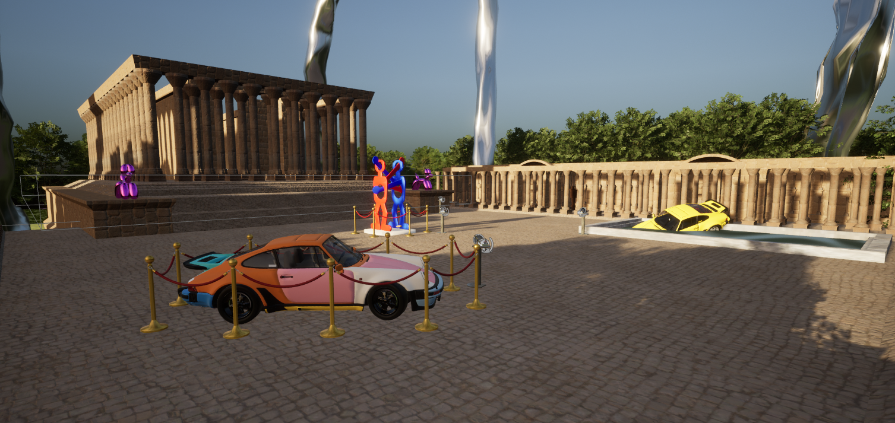

Visite virtuelle d'un musée

Contexte du projet
Ce projet a consisté à créer une visite immersive d'un musée en Réalité Virtuelle sur Unreal Engine 5. L’objectif était de concevoir une expérience interactive et accessible, permettant aux utilisateurs de découvrir différentes œuvres d’art modélisées en 3D, tout en intégrant des fonctionnalités de gameplay.
L'expérience utilisateur
Dès l’entrée dans le musée, l’utilisateur est accueilli par une radio qui diffuse une sélection de musiques. Nous avons mis en place un système de diffusion audio dynamique : le volume varie en fonction de la distance de l’utilisateur.
Un bouton sur un piédestal permet de déclencher un message audio présentant le musée et expliquant une activité ludique : une chasse au croissant à l’intérieur du musée.
Œuvres exposées dans le musée
- L’étoile de Jean Arp : sculpture organique en marbre évoquant le mouvement et la vie.
- The Boxers de Keith Haring : deux boxeurs stylisés aux formes simples et dynamiques.
- Yellow 911 Turbo In A Pool de Chris Labrooy : une Porsche 911 Turbo jaune plongée dans une piscine.
- 964 Blue de Chris Labrooy : une Porsche 964 avec une carrosserie aux panneaux multicolores.
- Balloon Dog de Jeff Koons : reproduction d’un ballon de baudruche stylisé en inox, dans différentes couleurs.
- Clasp I de Antony Gormley : deux corps en fonte se tenant l’un contre l’autre.
- Flower Ball de Takashi Murakami : une sphère composée de fleurs brillantes, utilisée dans le musée comme balle pour un chamboule-tout.
- Lunar de Samsofy : un astronaute en Lego explorant le sol lunaire, mis en scène dans un studio photo fidèle à l’œuvre originale.
- Maman de Louise Bourgeois : une araignée monumentale de 9 mètres de haut, surplombant l’ensemble du musée.

Technologies utilisées
- Unreal Engine 5 : moteur de jeu pour la création de l’environnement et des interactions VR.
- Blender : modélisation 3D des œuvres exposées.
- Visual Studio : développement des scripts en C++ et Blueprints dans Unreal.
- GitLab : gestion de versions et collaboration en équipe.
- Trello : gestion des tâches et organisation du projet.
Compétences développées
Techniques :
- Modélisation 3D avancée sur Blender.
- Programmation de mécaniques VR avec Unreal Engine 5 (Blueprints & C++).
- Implémentation de systèmes audio interactifs.
Transversales :
- Travail en équipe et collaboration sur un projet complexe.
- Organisation et planification avec Trello.
- Sensibilité artistique et fidélité aux œuvres originales.
Conclusion : retour d’expérience
Ce projet de musée virtuel nous a permis d’approfondir nos compétences en Réalité Virtuelle sur Unreal Engine 5 et de combiner nos connaissances en modélisation, programmation et design sonore.
L’organisation en équipe et la diversité des œuvres présentées ont fait de cette expérience un défi aussi enrichissant que stimulant. Les utilisateurs bénéficient d’une immersion complète dans un environnement artistique interactif et accessible.